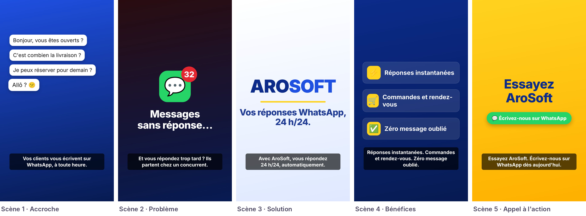
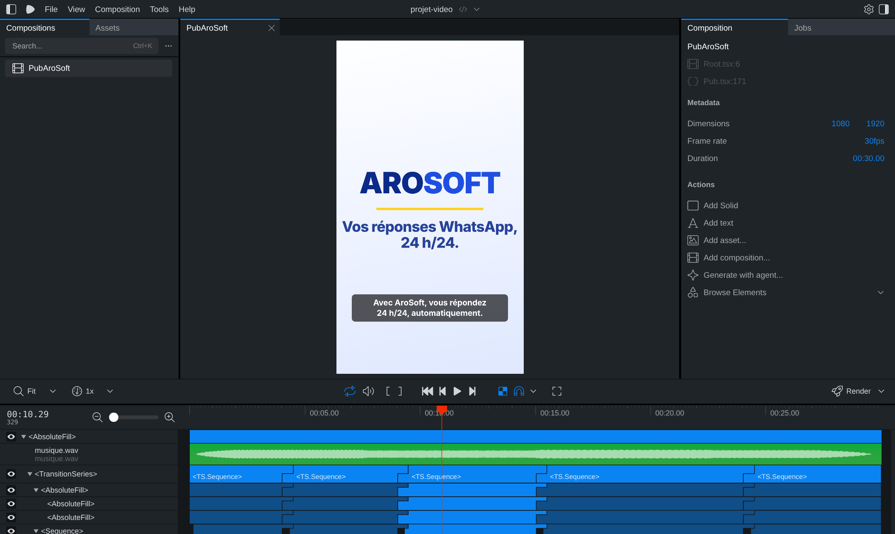

Bienvenue : ce que vous allez faire
Ce guide suit un seul chemin, du début à la fin. Pas d'options à choisir, pas de théorie inutile. Suivez les étapes dans l'ordre.
Le « vibe motion design », c'est créer des animations et des vidéos en décrivant ce que vous voulez à une intelligence artificielle, Claude Code, qui écrit le code à votre place. Vous regardez le résultat, vous dites ce qui ne va pas, et vous recommencez jusqu'à ce que ce soit parfait.
Votre objectif : cette publicité de 30 secondes

pub-arosoft.mp4. AroSoft et son offre sont utilisés ici comme exemple.Le parcours de A à Z
Ce qu'il vous faut
- Un ordinateur Mac ou Windows (pas une tablette).
- Un abonnement Claude payant (Pro au minimum) : le plan gratuit n'inclut pas Claude Code.
- Une connexion internet et environ 3 heures, en une ou plusieurs fois.
- Votre téléphone, pour enregistrer la voix-off.
AInstaller Claude Code
20 minutes, une seule fois. On utilise l'application de bureau Claude : pas de terminal, tout se fait avec la souris.
- Télécharger l'application. Allez sur claude.com/download et téléchargez Claude pour Mac ou pour Windows. Installez-la comme n'importe quel logiciel.
- Vous connecter. Ouvrez l'application et connectez-vous avec votre compte Claude.
- Ouvrir l'onglet Code. Cliquez sur l'onglet Code, en haut de la barre latérale. C'est là que se trouve Claude Code.
- Créer votre dossier de travail. Sur votre Bureau, créez un dossier nommé
mon-studio-motion. Tous vos projets iront dedans. - Choisir ce dossier. Sous la zone de texte, cliquez sur le sélecteur d'environnement et choisissez la première entrée du groupe Local. Juste à côté, cliquez sur Open folder… et sélectionnez
mon-studio-motion.
Une zone de texte où écrire à Claude, avec le nom de votre dossier affiché en dessous. C'est prêt.
- On vous propose de passer à une offre payante en cliquant sur Code : votre plan ne comprend pas Claude Code, il faut au moins l'abonnement Pro.
- On vous demande de vous connecter en ligne : terminez la connexion, puis redémarrez l'application.
- Les onglets n'affichent que des icônes : survolez-les avec la souris pour voir leur nom.
Comprendre les demandes de permission
Sous la zone de texte, un réglage indique le mode de permission. Au début, choisissez Manual : Claude vous montre chaque modification et attend votre accord avant de l'appliquer. Quand vous serez à l'aise, passez en Accept edits pour aller plus vite.
- Acceptez les créations et modifications de fichiers dans votre dossier.
- Si Claude veut supprimer quelque chose ou agir hors de votre dossier, refusez et demandez : « Explique-moi ce que tu veux faire et pourquoi. »
- Pour arrêter Claude en cours de route, cliquez sur le bouton stop.
BVotre première animation en 10 minutes
Un échauffement pour comprendre comment on travaille avec Claude, avant de passer à la vidéo.
Claude vous montre le fichier qu'il veut créer : acceptez. Il ouvre ensuite la page dans le panneau navigateur de l'application. Si ce n'est pas le cas, ouvrez le dossier mon-studio-motion et double-cliquez sur index.html.

- La page est blanche : écrivez « La page est blanche, trouve et corrige le problème. »
- Rien ne bouge : rechargez la page (F5, ou Cmd+R sur Mac).
Maintenant, corrigez-la (c'est ça, le « vibe »)
Envoyez ces trois demandes l'une après l'autre, en regardant le résultat à chaque fois :
La formule d'une bonne demande
Une demande efficace répond à cinq questions. Pas besoin de mots techniques : soyez simplement précis.
| Question | Exemple |
|---|---|
| Quoi ? L'élément concerné | « le titre », « les trois cartes », « le logo » |
| Où ? Sa place à l'écran | « au centre », « en haut », « depuis la droite » |
| Comment ? Le mouvement | « apparaît en fondu », « rebondit », « glisse » |
| Combien de temps ? | « en 0,5 s », « pendant toute la scène » |
| Quelle ambiance ? | « calme et premium », « énergique et joyeux » |
Exemple : « Le titre arrive depuis le bas, au centre, en 0,5 s, avec un léger rebond. Ambiance joyeuse. »
CLes bons mots et les bons réflexes
Six mots suffisent pour décrire presque tous les mouvements. Une page, à garder sous la main.
| Mot | Ce que ça veut dire | Exemple de demande |
|---|---|---|
| Durée | Le temps d'un mouvement. Une apparition dure 0,3 à 0,6 s, une scène 3 à 8 s. | « Le titre apparaît en 0,5 s. » |
| Ease-out | Arrive vite, freine en douceur. Le mouvement le plus naturel pour une entrée. | « Les cartes entrent en ease-out. » |
| Ressort (spring) | Arrive avec un petit rebond, vivant et joyeux. | « Le logo apparaît avec un effet ressort. » |
| Overshoot | Dépasse un peu sa place, puis revient. Donne du « pop ». | « Ajoute un léger overshoot. » |
| Décalage (stagger) | Plusieurs éléments partent l'un après l'autre. | « Les trois lignes arrivent avec 1 s d'écart. » |
| Transition | Le passage d'une scène à la suivante : fondu, glissement… | « Passe à la scène suivante en glissant vers la gauche. » |
Les bons et les mauvais retours
| Retour flou | Retour efficace |
|---|---|
| « C'est bof. » | « Le titre arrive trop tard, il doit être lisible dès 0,5 s. » |
| « Plus dynamique. » | « Rends tout 1,5 fois plus rapide et ajoute un effet ressort aux entrées. » |
| « C'est bizarre. » | « Les trois cartes arrivent en même temps : décale-les. » |
Quatre réflexes qui évitent 90 % des problèmes
- Une ou deux corrections à la fois, jamais dix. Sinon Claude en oublie ou casse autre chose.
- Sauvegardez ce qui marche. Écrivez : « Mets en place Git dans ce dossier et sauvegarde cette version sous le nom “[description]”. » Ensuite, dites simplement « sauvegarde » à chaque étape réussie.
- Revenez en arrière sans peur : « Annule ta dernière modification », ou « Reviens à la version “[nom]” ».
- Si ça tourne en rond après trois essais, revenez à la dernière version qui marchait, ouvrez une nouvelle session et reformulez plus simplement.
DPréparer la vidéo : objectif, script, storyboard
Les pros passent autant de temps à préparer qu'à animer. Ici, Claude vous aide à tout préparer en 20 minutes.
1. L'objectif et le public
Répondez à trois questions : à qui parle la vidéo, que doit-on retenir, et que doit-on faire après l'avoir vue. Pour notre exemple :
- Public : commerçants et petites entreprises qui reçoivent beaucoup de messages WhatsApp.
- Message : AroSoft répond à vos clients automatiquement, 24 h/24.
- Action : écrire à AroSoft sur WhatsApp.
2. Le script
Ouvrez une nouvelle session dans votre dossier, puis écrivez :
Relisez, puis corrigez jusqu'à ce que le script vous plaise : « La phrase 2 est trop longue », « Rends l'accroche plus percutante ». Voici le script retenu pour l'exemple :
| Scène | Voix-off | À l'écran |
|---|---|---|
| 1 · Accroche | « Vos clients vous écrivent sur WhatsApp, à toute heure. » | Des bulles de messages apparaissent une à une. |
| 2 · Problème | « Et vous répondez trop tard ? Ils partent chez un concurrent. » | Un compteur de messages non lus grimpe et tremble. |
| 3 · Solution | « Avec AroSoft, vous répondez 24 h/24, automatiquement. » | Le logo AroSoft surgit, souligné en jaune. |
| 4 · Bénéfices | « Réponses instantanées. Commandes et rendez-vous. Zéro message oublié. » | Trois cartes avec icône montent l'une après l'autre. |
| 5 · Appel | « Essayez AroSoft. Écrivez-nous sur WhatsApp dès aujourd'hui. » | « Essayez AroSoft » et un bouton vert qui pulse. |
3. Le storyboard minuté
Le storyboard fixe la durée de chaque scène. Demandez :
| Scène | Durée | Mouvement principal | Transition vers la suite |
|---|---|---|---|
| 1 · Accroche | 4,5 s | Bulles en effet ressort, avec un petit « pop » sonore | Glissement depuis la droite |
| 2 · Problème | 5,5 s | Compteur 3 → 47, puis tremblement | Fondu |
| 3 · Solution | 6,5 s | Logo en ressort, ligne jaune qui se trace | Glissement depuis le bas |
| 4 · Bénéfices | 9,5 s | 3 cartes en ease-out, décalées | Fondu |
| 5 · Appel | 6 s | Titre qui monte, bouton qui pulse, fondu final | — |
Le total des scènes fait 32 s, mais les 4 transitions de 0,5 s font se chevaucher les scènes : la vidéo dure bien 30 s.
4. La direction artistique
Choisissez 3 à 5 couleurs et une police, puis tenez-vous-y. Pour l'exemple, les couleurs de la couverture AroSoft :
Police : Inter, en gras pour les titres. Vous n'avez pas de charte ? Demandez : « Propose-moi 3 palettes de couleurs pour une marque [ambiance], avec leurs codes. »
5. Les images et éléments graphiques
Rassemblez dans votre dossier ce dont vous disposez : votre logo (idéalement en SVG ou en PNG transparent) et vos photos de produit. Dans l'exemple, tout est dessiné par le code (bulles, cartes, icônes emoji) : aucune image n'est nécessaire pour commencer.
ECréer le projet vidéo avec Remotion
Remotion est un outil gratuit (pour les particuliers et les équipes de 3 personnes au plus) qui fabrique de vraies vidéos MP4 à partir de code.
1. Installer Node.js
Remotion a besoin d'un logiciel gratuit, Node.js. Demandez d'abord :
S'il manque ou s'il est trop ancien : allez sur nodejs.org, téléchargez la version LTS, installez-la avec les options par défaut, puis redémarrez l'application Claude. Remotion demande au minimum Node.js 20.19 ou 22.13.
2. Créer le projet
Claude va lancer plusieurs commandes : acceptez-les, elles concernent votre dossier. L'installation prend quelques minutes.
Un dossier projet-video avec, entre autres, un sous-dossier src (le code de la vidéo) et un sous-dossier public (vos sons et images). Claude confirme que le projet est créé.
- « npx n'est pas reconnu » ou « node: command not found » : Node.js n'est pas installé, ou l'application a été ouverte avant son installation. Redémarrez-la.
- L'installation semble bloquée depuis plus de 10 minutes : cliquez sur stop, puis écrivez « Où en est l'installation ? Recommence si besoin. »
3. Régler le format de la vidéo
4. Ouvrir le Studio Remotion

- Lecture : le bouton ▶ sous l'aperçu, ou la barre Espace.
- Aller à un moment précis : cliquez sur la ligne du temps, en bas.
- L'aperçu se met à jour tout seul chaque fois que Claude modifie le code. Laissez le Studio ouvert pendant tout le travail.
- Le Studio ne s'ouvre pas : demandez « À quelle adresse est le Studio ? » et ouvrez-la dans votre navigateur (souvent
http://localhost:3000). - « Port already in use » : écrivez « Arrête l'ancien Studio et relance-le. »
FAnimer les 5 scènes
Une scène à la fois. Après chaque demande, regardez-la dans le Studio, corrigez si besoin, puis dites « sauvegarde ».
Scène 1 · Accroche (4,5 s)
Scène 2 · Problème (5,5 s)
Scène 3 · Solution (6,5 s)
Scène 4 · Bénéfices (9,5 s)
Scène 5 · Appel à l'action (6 s)
Les transitions
Dans le Studio, la ligne du temps montre 5 blocs qui se chevauchent légèrement. En lisant la vidéo, chaque scène s'enchaîne sans écran noir.
- Un texte sort de l'écran ou se coupe mal : « Dans la scène [n], le texte déborde : réduis sa taille et garde 80 px de marge sur les côtés. »
- Une scène paraît vide au début : « Dans la scène [n], fais apparaître le premier élément plus tôt. »
- Erreur rouge dans le Studio : copiez le message et collez-le à Claude : « Corrige cette erreur : [message]. »
Comprendre ce que Claude a écrit (sans coder)
Vous n'avez pas besoin de lire le code. Mais il est utile de savoir où se trouvent vos textes. Ils sont tous dans le fichier src/script.ts, qui ressemble à ceci (extrait réel du projet d'exemple) :
export const scenes = [
{ id: "accroche", duree: 135, voix: "voix/scene1.wav",
texte: "Vos clients vous écrivent sur WhatsApp, à toute heure." },
{ id: "probleme", duree: 165, voix: "voix/scene2.wav",
texte: "Et vous répondez trop tard ? Ils partent chez un concurrent." },
...
];
- duree se compte en images : 30 images = 1 seconde. Ici, 135 images = 4,5 s.
- voix indique le fichier son de la scène, rangé dans
public/. - texte est la phrase affichée en sous-titre.
Vous pouvez modifier un texte vous-même, entre les guillemets, puis enregistrer le fichier : le Studio se met à jour aussitôt. Ou demandez à Claude : « Dans la scène 2, remplace la phrase par… »
GLe son : voix-off, musique, effets et sous-titres
Le son fait la moitié d'une vidéo réussie. Et beaucoup de gens regardent sans le son : les sous-titres sont indispensables.
1. Enregistrer la voix-off
- Avec l'application d'enregistrement de votre téléphone, dans une pièce calme, lisez une phrase par fichier : 5 fichiers pour les 5 scènes. Parlez lentement et souriez : ça s'entend.
- Vérifiez que chaque phrase dure moins que sa scène (par exemple moins de 4 s pour la scène 1).
- Envoyez-vous les fichiers et copiez-les dans
projet-video/public/voix/, nommésscene1àscene5.
2. La musique et les effets sonores
Le plus simple et sans risque de droits : demandez à Claude de composer une musique de fond simple.
Vous préférez une vraie musique ? Prenez-la dans une bibliothèque libre de droits, en vérifiant que la licence de chaque morceau autorise l'usage commercial, puis déposez-la dans public/.
- « ffmpeg n'est pas reconnu » : demandez « Installe FFmpeg sur mon ordinateur et explique-moi ce que tu installes. »
- La musique couvre la voix : « Baisse la musique à 15 % pendant que la voix parle. »
- La voix est décalée : « Dans la scène [n], fais démarrer la voix 0,5 s plus tôt. »
3. Les sous-titres
Comme vous avez déjà le script, inutile de faire transcrire la voix : on affiche directement le texte de chaque scène.
Les bons niveaux sonores
| Élément | Volume conseillé | Pourquoi |
|---|---|---|
| Voix-off | 100 % (harmonisée autour de −14 LUFS) | C'est elle qui porte le message. |
| Musique | 15 à 25 % | Elle crée l'ambiance sans couvrir la voix. |
| Effets (« pop », « whoosh ») | 30 à 40 % | Ils ponctuent, ils ne doivent pas surprendre. |
Le LUFS est l'unité qui mesure le volume perçu. Autour de −14 LUFS, une vidéo sonne au même niveau que les autres sur les réseaux sociaux. Vous n'avez rien à calculer : Claude le mesure pour vous à l'étape H.
Le test du téléphone : écoutez toujours la vidéo finale sur le haut-parleur de votre téléphone, là où elle sera vue. Si la voix est difficile à comprendre, baissez la musique.
HVérifier, exporter et publier
Dernière ligne droite. Ne sautez pas la vérification : c'est elle qui fait la différence entre une vidéo amateur et une vidéo pro.
1. Le contrôle qualité
Regardez la vidéo entière dans le Studio, deux fois : une fois avec le son, une fois sans. Cochez :
- Le message se comprend sans le son, grâce aux sous-titres.
- Aucun texte ne déborde, ne se coupe mal, ni n'est caché en haut ou en bas.
- Chaque phrase de voix se termine avant la fin de sa scène.
- La musique ne couvre jamais la voix.
- Pas de scène vide, pas d'écran noir entre les scènes.
- Les fautes d'orthographe sont corrigées (relisez chaque texte à l'écran).
2. Exporter le MP4
Une progression « Rendered … / 900 », puis « Encoded 900/900 » et le chemin du fichier. Pour l'exemple, voici les mesures réellement obtenues :
| Durée | Format | Images/s | Image | Son | Volume | Poids |
|---|---|---|---|---|---|---|
| 30,0 s | 1080×1920 | 30 | H.264 | AAC | −16,4 LUFS | 4,3 Mo |
- Le rendu échoue en téléchargeant un navigateur : vérifiez votre connexion internet et relancez. Remotion télécharge un navigateur la première fois.
- La vidéo exportée diffère de l'aperçu : « Rends l'animation entièrement basée sur le numéro d'image, sans hasard ni minuteur. »
- Le son est trop faible sur le téléphone : « Monte le volume global vers −14 LUFS sans saturer. »
3. Publier
- Envoyez le fichier MP4 sur votre téléphone (câble, AirDrop, WhatsApp à vous-même en « document », Google Drive…).
- Publiez-le en Reel (Instagram, Facebook), sur TikTok, en Short YouTube ou en Statut WhatsApp. Le format vertical 1080×1920 convient à tous.
- Écrivez une légende courte qui reprend l'appel à l'action.
Réutiliser votre modèle pour d'autres vidéos
Le plus dur est fait. Votre projet est maintenant un modèle : une nouvelle pub prend quelques minutes.
Changer les textes
Tous les textes sont dans src/script.ts. Demandez simplement :
Faire plusieurs vidéos d'un coup
Mémoriser votre style : le fichier CLAUDE.md
CLAUDE.md est un fichier texte que Claude lit automatiquement au début de chaque session. Écrivez-y une fois pour toutes vos couleurs et vos règles :
Ensuite, une demande comme « fais une pub de 20 secondes pour notre offre de rentrée » respectera directement votre style.
Les fichiers du projet d'exemple
Le projet complet de la pub AroSoft est fourni avec ce guide, dans le dossier projet-video. Pour l'utiliser : copiez-le dans mon-studio-motion, ouvrez-le dans Claude Code et écrivez « Installe les dépendances de ce projet Remotion et lance le Studio. »
| Fichier | Rôle |
|---|---|
src/script.ts | Le script : textes, durées et voix de chaque scène, et les couleurs. |
src/Pub.tsx | Les 5 scènes, les transitions, le son et les sous-titres. |
src/Root.tsx | Le format : 1080×1920, 30 images/s, durée totale. |
public/ | La voix (voix/), la musique et le son « pop ». |
Dépannage express
Le réflexe numéro 1 : copiez le message d'erreur et collez-le à Claude, en lui demandant de l'expliquer simplement et de corriger.
| Problème | Quoi faire |
|---|---|
| L'onglet Code me propose de passer à une offre payante | Claude Code demande un abonnement Pro au minimum. |
| Je ne sais plus dans quel dossier travaille Claude | « Dans quel dossier travailles-tu ? Liste les fichiers. » |
| « npx » ou « node » n'est pas reconnu | Installez Node.js (version LTS sur nodejs.org), puis redémarrez l'application. |
| « ffmpeg » n'est pas reconnu | « Installe FFmpeg et explique-moi ce que tu installes. » |
| La page ou l'aperçu est blanc | « L'aperçu est blanc, trouve et corrige le problème. » |
| Je ne vois pas mes modifications | Rechargez la page. Vérifiez que le Studio est toujours lancé. |
| L'animation saccade | « Optimise l'animation pour qu'elle soit fluide. » |
| Tout bouge en même temps | « Définis un ordre : d'abord le titre, puis le reste, avec 0,3 s d'écart. » |
| Ça fait « généré par IA » | « Retire la moitié des effets. Garde un seul mouvement marquant par scène. » |
| Claude a tout cassé | « Reviens à la dernière version sauvegardée. » |
| Claude tourne en rond | Dernière version qui marchait, nouvelle session, demande plus simple. |
| « Port already in use » | « Arrête l'ancien Studio et relance-le. » |
| Message de limite d'utilisation atteinte | Votre quota est épuisé pour le moment : attendez l'heure indiquée. |
| Texte caché par les boutons de TikTok ou d'Instagram | « Garde tous les textes à au moins 300 px du bas et 150 px du haut. » |
Coûts et droits, en bref
- Claude Code : inclus dans les abonnements payants (Pro, Max, Team, Enterprise). Chaque abonnement a un quota d'utilisation qui se renouvelle. Tarifs à jour : claude.com/pricing.
- Remotion : gratuit pour les particuliers et les équipes de 3 personnes au plus. Au-delà, une licence d'entreprise est nécessaire (conditions sur remotion.pro/license).
- Node.js, FFmpeg : gratuits.
- Musique, voix, images, polices : vérifiez toujours que vous avez le droit de les utiliser commercialement.
- Économiser votre quota : une nouvelle session par projet, des demandes précises, et un fichier CLAUDE.md.
Glossaire express
Les mots que vous allez croiser, en une phrase chacun.
| Mot | En clair |
|---|---|
| Claude Code | La version de Claude qui crée et modifie des fichiers sur votre ordinateur. |
| Session | Une conversation avec Claude sur un projet. Une nouvelle session repart de zéro. |
| Dossier de travail | Le dossier de votre ordinateur dans lequel Claude a le droit de travailler. |
| Prompt | Le texte que vous écrivez à Claude. |
| HTML / CSS | Les langages des pages web : le contenu (HTML) et l'apparence (CSS). |
| Node.js | Logiciel gratuit qui fait fonctionner Remotion sur votre ordinateur. |
| npx | Commande fournie avec Node.js pour lancer des outils, comme create-video. |
| Remotion | Outil qui fabrique des vidéos MP4 à partir de code. |
| Studio Remotion | La fenêtre d'aperçu de votre vidéo, avec sa ligne du temps. |
| Composition | Une vidéo dans Remotion : son nom, son format, sa durée. |
| Image (frame) / fps | Une vidéo est une suite d'images. 30 fps = 30 images par seconde. |
| Skill | Fiche de bonnes pratiques qui donne à Claude un savoir-faire précis. |
| FFmpeg | Logiciel gratuit pour convertir et mesurer le son et la vidéo. |
| Rendu (render) | Le calcul de toutes les images pour produire le fichier MP4 final. |
| MP4 | Le format vidéo accepté partout. |
| LUFS | L'unité du volume sonore perçu. Cible conseillée : environ −14. |
| Git / sauvegarde | L'historique de vos versions. Claude s'en occupe quand vous dites « sauvegarde ». |
| Ease-out, ressort, stagger | Voir l'étape C. |
Questions fréquentes
Les questions que se posent presque tous les débutants.
Faut-il savoir coder ?
Non. Vous décrivez, Claude écrit le code. Savoir où se trouvent vos textes (src/script.ts) suffit largement.
Puis-je tout faire sur mon téléphone ?
Non : la création se fait sur un ordinateur Mac ou Windows. Le téléphone sert à enregistrer la voix et à publier la vidéo.
Combien de temps faut-il ?
Environ 3 heures pour la première vidéo, en suivant ce guide. Les suivantes, avec votre modèle, prennent souvent moins d'une heure.
Mon résultat ne ressemble pas exactement aux images du guide. C'est grave ?
Non, c'est normal. Claude ne produit jamais deux fois la même chose. Corrigez avec la boucle « décrire, regarder, corriger » jusqu'à obtenir ce que vous voulez.
Puis-je vendre ou diffuser commercialement mes vidéos ?
Oui, à condition d'avoir les droits sur tout ce que vous utilisez (musique, voix, images, polices) et de respecter la licence Remotion : gratuite pour les particuliers et les équipes de 3 personnes au plus, payante au-delà.
Et si je veux un format horizontal pour YouTube ?
Demandez une deuxième composition en 1920×1080 qui réutilise les mêmes scènes, en adaptant les positions.
Claude a supprimé ou cassé quelque chose. Que faire ?
« Reviens à la dernière version sauvegardée. » D'où l'importance de dire « sauvegarde » à chaque étape réussie.
J'ai atteint la limite d'utilisation. Pourquoi ?
Chaque abonnement a un quota qui se renouvelle. Les longues sessions consomment plus : ouvrez une nouvelle session par projet et faites des demandes précises.
Puis-je utiliser une voix générée par IA ?
Oui, si le service choisi autorise l'usage commercial avec votre abonnement. Déposez simplement les fichiers dans public/voix/, comme pour un enregistrement.
L'antisèche : tout le parcours en une page
Une fois le guide terminé, cette page suffit pour refaire une vidéo.
| Étape | Ce que vous écrivez à Claude (en résumé) |
|---|---|
| Préparer | « Écris un script de pub de 30 s en 5 scènes pour [marque], public [public], action [action]. Ne code rien. » |
| Storyboard | « Transforme ce script en storyboard minuté de 30 s, avec les transitions. » |
| Projet | « Crée un projet Remotion vide (npx create-video@latest --yes --blank projet-video), installe les skills Remotion et @remotion/transitions. » |
| Format | « Crée une composition verticale 1080×1920, 30 images/s, 30 s, avec le script dans src/script.ts. » |
| Studio | « Lance le Studio Remotion. » |
| Scènes | Une demande par scène : fond, éléments, mouvement, durée. |
| Transitions | « Enchaîne les scènes avec TransitionSeries, transitions de 0,5 s, durée totale 30 s. » |
| Voix | « Harmonise le volume des voix (loudnorm −14 LUFS) et place chaque voix dans sa scène. » |
| Musique | « Ajoute public/musique.wav à 25 % sur toute la vidéo, et un “pop” sur les apparitions. » |
| Sous-titres | « Affiche le texte de chaque scène en sous-titre, à 300 px du bas. » |
| Vérifier | Regarder deux fois (avec et sans le son), puis cocher la checklist de l'étape H. |
| Exporter | « Exporte en MP4 dans out/, vérifie durée, format, son et volume avec ffprobe. » |
| Sauvegarder | « Sauvegarde cette version sous le nom “pub terminée”. » |
Checklist finale
- J'ai installé Claude Code et réussi l'animation « Bonjour ».
- J'ai un script en 5 scènes et un storyboard minuté.
- Mon projet Remotion s'ouvre dans le Studio.
- Mes 5 scènes s'enchaînent avec des transitions.
- Ma voix, ma musique et mes sous-titres sont en place.
- J'ai vérifié la vidéo avec et sans le son.
- J'ai exporté un MP4 de 30 s en 1080×1920, et je l'ai publié.
- J'ai sauvegardé le projet et créé mon fichier CLAUDE.md.